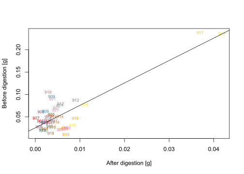
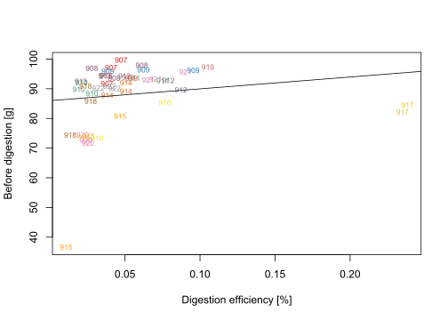

Chapter 2 Microplastic sampling and processing 2019 - Results
2.0.1 Size
During the entire sampling period of 2019 a total of 286 particles were detected and measured, both in the samples and the blanks. 232 particles were in the largest size class; bigger than 350 µm. 50 particles were between 100-350 µm and only 3 particles were smaller than 100 µm (thereof one fibre). All paint fragments were under 350 µm in the longest dimension and 21 of 40 fragments were under 350 µm. Size distribution of all detected particles are shown in the graph below.
| Type | Blank | N |
|---|---|---|
| Fibre | no | 200 |
| Fibre | yes | 32 |
| Fragment | no | 40 |
| Paint | no | 14 |
Due to the fact that the samples were analysed with the stereo microscope mostly large particles were observed. It is very likely that this picture would look different if a more sensitive analytical approach (like FTIR or Raman) would have been used. Some scientists which have been using more advanced analytical methods have shown that the abundance of microplastics increase with decreasing size.
Figure 2.1: Size distribution of the microplastic particles. Blanks are excluded.
2.0.2 Colour
The most dominant colour was blue (64 particles) followed by transparent (57 particles) and black (56 particles). Color distribution, including less abundant colors, is shown in the graph below.
Figure 2.2: Color distribution of the microplastic particles.
2.0.3 Particles per sampling trip
Sampling was carried out between April and October 2019 (total of 63 samples). Three samples were taken during each sampling trip (21 sampling trips). The average and standard deviation was calculated from each sampling trip and is shown in the graph below.
Numbers of particles are very low which could be attributed to the analytical method (stereoscopic observation) which only allows us to detect bigger particles (see graph above).
Mean particle abundance per sample ID was 1.2 (± 2.3).
As shown in the graph the standard deviation is very high which means there is big variability between the three samples. To improve this more samples could be taken. Another idea could be to sample a bigger volume of water to increase the number of particles. Instead of using a stereo microscope to detect the particles a more sensitive method could be used to be able to detect smaller particles and thus improve variability.
Blanks during sampling were taken from July onwards and are represented as black bars in the barchart below. Number of particles in the blanks can be close to the number of particles found in the samples which makes it difficult to conclude on the real number of particle present in the samples.
Figure 2.3: Number of microplastic particles per sampling trip.
2.0.4 Particles per cubic meter per sampling week
From the number of particles found per sampling trip the number of particles per cubic meter was calculated and is shown in the graph As described above, the number of particles per cubic meters is very low with a mean of 0.9 (± 0.7) particles per cubic meter.
Figure 2.4: Microplastic particles per cubic meter per sampling trip
2.1 Summary
In theory particle number should increase with decreasing particle size but that is not the case when analysing the samples with a stereo microscope.
Since the mean particle number was around 1.3 (± 2.3) per sampling trip and the mean number of particles found in the blank was around 0.5 (± 1.3) per sampling trip our findings are not very meaningful.
The number of detected MP particles must be well above blank samples!!!
2.1.1 Improvements/Ideas
- Start finding a purpose of the monitoring programme, and set its aims!
- If the purpose of the monitoring is to detect long-term trends, of microplastics in the marine environment, sediments might be the most suitable matrix since it is the sink where most particles will be sequestered (collect where MPs are likely to accumulate)
- If the purpose of the monitoring instead is to detect time trends of microplastic emissions from a point source, such as a wastewater treatment plant or an industry, sampling of the water surface or water column would ideally provide information on the single process or pathway.
- We need to change our sampling in order to increase the number of particles in each sample (e.g. by increasing sampling volume and decreasing mesh size or measuring smaller particles with the same mesh size, …).
- „Regardless of which method is applied, most important is to ensure that the samples contain a high enough number of particles and to take enough replicates to allow for statistical analysis of data. This is vital in order to compensate for uncertainty related to counting statistics and patchiness of microplastic particles within the confined sampled space (Karsson et al. 2018).“
Try to avoid sand in our samples to eliminate the density separation step (avoid sampling to close to the sea bed)
Our filters still seem to contain a lot of chitinous zooplankton carapaces after our digestion protocol with KOH and H2O2
- Try to digest with chitinase enzymes
- Another idea would be to use the Raman to check the chemical composition of the organic matter which is left on the filters to improve the digestion method (then we would be able to specifically target certain polymers like chitin, cellulose,.. and digest them accordingly).
Organic material needs to be digested further on our samples if automated spectroscopic analysis with Raman will be applied
In addition to internal blanks, recoveries of reference particles in different size fractions and external QA procedures should be included
2.1.2 Other notes:
- The abundance of microplastics, as for most other particles, increases exponentially with smaller sizes, and therefore all recent environmental risk assessment reports emphasize the role of smaller MP sizes
- Studies show that data from surface water only (like with manta net) does not provide a complete picture of the amount of microplastics in water.
- It should be emphasized that both the visual analyses with stereomicroscopy (to reveal the particle shape, colour and texture) and the interpretation of spectra from FTIR and Raman spectroscopy (to identify the polymer composition of the particles) require a well-trained staff if the results are to be reliable.
- The more digestion steps are applied the higher the risk of contamination and the higher the risk of loss of particles in the samples
- When using ZnCl2: precipitation can form with high alkaline solutions (ZnOH2)
- ZnCl2: a larger number of non-plastic particles will float up to the surface, making the analysis of samples more difficult
- When working with ZnCl2: it is classified as toxic to humans and hazardous to the aquatic environment, and all the liquids and sediment need to be treated as chemical waste!!!
- The depth where water samples are being collected, or the sampling season can make a crucial difference in the amounts and types of organic material present in the samples -> affecting the selection of most suitable digestion methods.
- The requirements for sample quality and purity are higher when aiming to analyze smaller particles
2.2 Sampling and processing dates of 2019
2.2.1 Efficiency of digestion
Samples 901-906 could not be weighed as those samples were put onto a GF/C filter which seems to have lost weight after filtration. Hence samples 901-906 could not give us information about the digestion efficiency. Samples 907-909 were put onto a membrane filter (0.22 um) and samples 910-922 were put onto the normal Nitrocellulose filters. Weight was taken from all filters after they had been dried at room temperature for several weeks. The median digestion efficiency was 92 % which means that 92 % of the organic matter present in the beginning was digested. The average digestion efficiency was at 88 %. The amount left behind on the filter after digestion correlates with the amount of organic matter originally present in the samples. Digestion efficiency was below the average in samples 915, 916, 917, 918 and 920. Possibly because of high content of diatoms. All but the nitrocellulose filters were digestet as well which explains why digestion efficiancy is over 100% in many cases.
